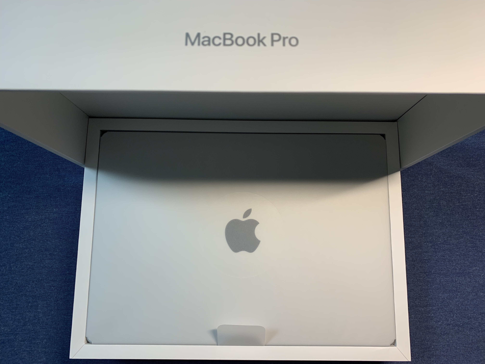
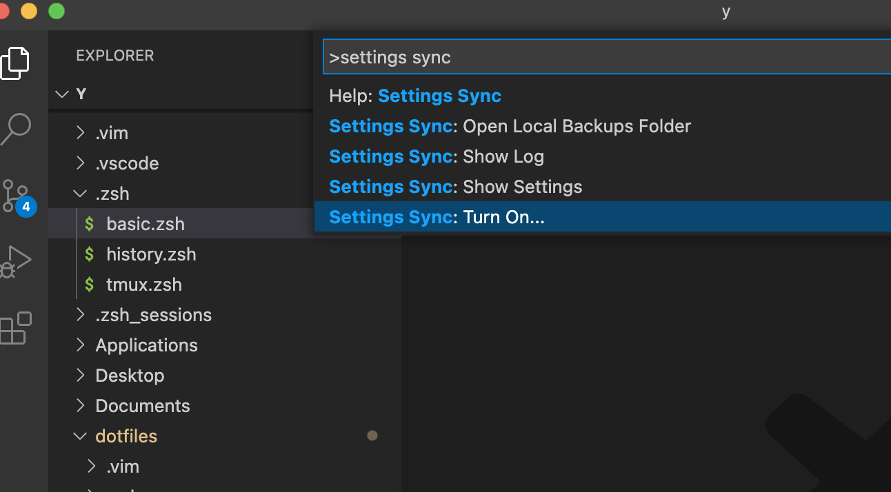
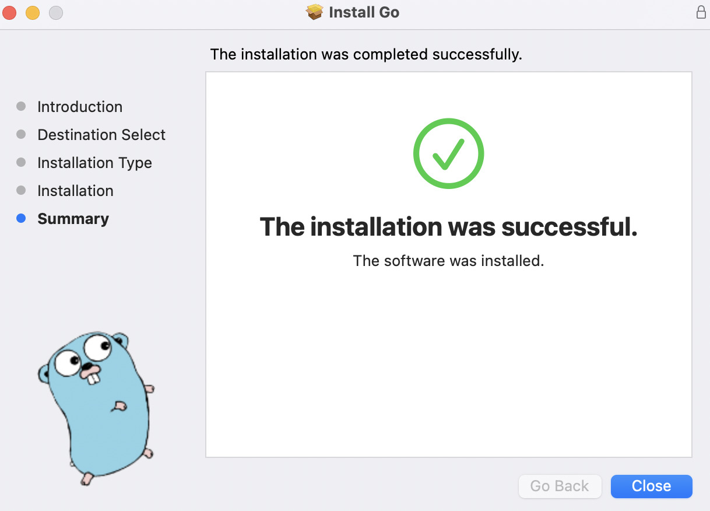
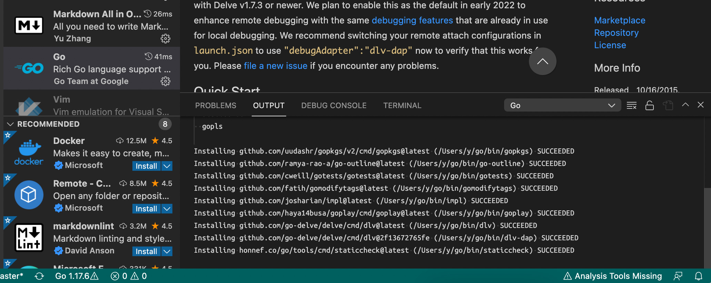

年始セットアップメモ（2022年）
| lastmod:
この記事は書かれてから1年以上が経過しており、最新の情報とは異なる可能性があります
もしかすると、 毎年新年にセットアップするといいかも？ と思いはじめてきました。
じゃじゃーん 🎉
買いました！ 🎉 🎉
M1 Mac を年末に購入したため、 どちらにしろセットアップはやらないといけなかったのですが、 やっていくうちに 年始にセットアップすると思った以上にメリットがあるなあ と思うようになりました。
例えば以下とか。
- 永続化すべきものがちゃんと出来ているかどうかのチェックになる
- 古い設定が残って悪さするのを定期的にリセットできる
- メイン PC にトラブルがあっても、仕事ができるまでの復旧が早くなる
- TwentyFour だと荷物捨てるシーンはよくある
- ミニ式年遷宮 することで、 新年新たな気持ちで迎えられる 🎍
最後のは気持ちの問題ですが、 古いものをばっさり行って新たな気持ちで新年迎えるのはけっこう清々しくて良いです。
なので来年やるかどうかは分からないまでも、とりあえず今年分のメモくらいはやっておきましょう。 ということでメモメモ。
メニュー
そんなにしっかり書き込んで記事に残す必要もないので、あくまで自分向けに 『こんなこと設定しました』 というメモを残せればいいかなと思います。
セットアップ前チェック
今回は PC が2台あるから大丈夫だけど、次回以降でクリーンインストールする前にチェックすべきだなーと思うことを挙げておきます。
- リポジトリ内でリポジトリに含まれないファイルのうち、 消したらまずいもの をチェック
- 例:
.env.sampleに対する.envなど
- 例:
最低限ブラウジングできるまで

ここではパスワードマネージャをインストールして、 ブラウザ経由でログインして使うサービスが使えるところまで とします。
- OS のセットアップ
- 概ね流れのままに設定
- 言語は英語 にして、普段から英語に慣れる
- Dock から不要なもの削除（全部）
- System Preferences
- Dock が邪魔しないよう極力小さく
- ショートカット設定
- 極力いじらない方針
- F1〜F12キーはそのまま入力できるように（物理キー最高〜）
Shift + Ctrl + Hでウィンドウ左スクロール- 本当は
fn + Hにしたい・・・
- 本当は
Shift + Ctrl + Lでウィンドウ右スクロール- 本当は
fn + Lにしたい・・・
- 本当は
- Spotlight と Input Sources のキー入れ替え
- 本当はカスタマイズしたくないけど、ここは止むを得ない
- 日本語圏なので Input Method の方が優先度高い
スリープキーはCtrl-Cmd-Qで代用以前は Touch Bar でスリープキーを一番右に指定スリープキー自体の割り当てはないので、 ロックをかけるショートカットを覚える
- スリープのショートカットを App Shortcuts からタイトルを
Sleepにして作る- F6 が三日月マークなので
Opt-Cmd-F6あたりに割り当て
- F6 が三日月マークなので
- 同一アプリ・別ウィンドウの切り替えは `Cmd-`` で代用
Cmd-Tabではアプリ間の切り替えしかできない（ Windows と挙動が異なる）
- firewall の設定
- Trackpad の設定
Force Click and haptic feedbackの項目を OFF に- トラックパッド強く押して意図に反した操作になるのを防ぐ
- 各種ブラウザインストール
- Google Chrome
- Firefox
- 1password に依存している Dropbox インストール
- Dropbox は削除可能なので、次までに依存しないようにしたい・・・
- 1password が利用している代替ストレージは iCloud あたり？
- 1password インストール
- feedly のアカウント移行 （今回のみ）
- ユーザーの整理をする必要があったので再設定
- OPML 形式でインポートエクスポート
- Chrome の設定 （今回のみ）
- 本来は同期されるので不要、今回のみ再設定
- よく使うショートカットをブックマークバーにアイコンだけ登録
- Google Chrome 拡張機能インストール （今回のみ）
- ここも同様に再設定
- Empty New Tab Page
- 画面共有したときに余計なものが映らないようにする
- Toggl Track
- 時間計測する
- Lighthouse
- Web ページの分析用、すぐ使うわけではないけどいずれ必要になるのでこのタイミングで
- DeepL Translate
- UI を英語にしたり読む記事を英語にする分、日本語に翻訳しやすくしておく
PC でコミュニケーション取れるまで

最低限連絡ついたり仕事ができたりする状態に早めにしておくと安心ですよね。
ということで、最低限の仕事ができるまでを一旦の目標とします。
- Slack インストール
- 各種ワークスペースへのログインし直し
- Zoom インストール
- Teams インストール
- ターミナルインストール
- iTerm2 を使っていたが、このタイミングで Alacritty に乗り換えてみる
- https://github.com/alacritty/alacritty
- ターミナルとターミナルマルチプレクサが分離できていれば、ターミナルは比較的なんでも可
- ターミナル設定
- https://github.com/girigiribauer/dotfiles を clone
- 中身はだいぶ古いので、見直しが必要・・・
- シンボリックリンク張り替え
- （以下概要のみ）
- zsh 周り（シェル）
- tmux 周り（ターミナルマルチプレクサ）
- ssh 周り
.ssh/内のパーミッション設定id_rsaは 0600 にしないと後で弾かれる
- Homebrew インストール
- （以下概要のみ）
- oh-my-zsh
- tmux
- fzf
- tig
- Alacritty の YAML 設定ファイルを最低限書く
- https://github.com/girigiribauer/dotfiles を clone
- 仕事用のリポジトリを手元にクローン
- VSCode インストール
codeコマンドで立ち上がるよう設定
ここまでで最低限、チャットツールでやりとりができ、エディタ開いて少し修正してコミット、程度のことができるようになりました。
わーい 👏
あとおまけでブログも書けるようにしておきつつ、 brew install imagemagick して、手元で mogrify コマンドを叩けるようにしておきました。
画像の一括処理とかが手元のコマンドでできてすごく便利で、ここの記事の画像もこれで処理しちゃってます。
ブログ投稿できるまで
ブログ投稿を、 Go 製のスタティックサイトジェネレータである Hugo を利用して行なっています。
- Homebrew 追加インストール
- hugo （スタティックサイトジェネレータ）
- https://gohugo.io/
- ただしブログのテンプレートはぐちゃぐちゃなので見直す
- imagemagick （ブログ作成時の画像変換用）
- https://imagemagick.org/
- 単体なら
convertコマンド、画像が多いときはmogrifyコマンドを使う
- ffmpeg （ブログ作成時の動画変換用）
- https://www.ffmpeg.org/
ffmpeg -i src.mov dst.mp4だけで変換できる
- massren （CLI のファイル一括リネーム）
- https://github.com/laurent22/massren
- リネームしたいディレクトリで
massrenコマンドを実行 - ファイル名の一覧をテキストファイルに表示し、それを編集することでリネームする（発想が好き）
- hugo （スタティックサイトジェネレータ）
- KeyCastr インストール
- https://github.com/keycastr/keycastr
- キー操作を可視化したい（画面共有時、動画化など）
- KeyCastr のキャプチャ ON/OFF のキーバインドを
Shift+Opt+Cmd+0あたりに（滅多に入力しない）
この辺まで入れれば、以下のように 動画キャプチャをブログに持ってくるまでの敷居がめちゃめちゃ低く なります。
この辺は別記事にまとめてもいいかもしれませんね。
各種作業への最適化
前項目まででは以前通り仕事ができるとは言い難いので、足りない項目を順次セットアップしていきます。
ここから先はやりながらの方が抜け漏れ気付きやすいと思うので、仕事と平行してセットアップしていきます。
共通、あるいはよく使うもの
- zsh で vi-mode indicator が表示されてない状態だったのを修正 （今回のみ）
- VSCode の拡張機能インストール （今回のみ）
- （以下概要のみ）
- vscodevim
- その他仕事で使いそうなシンタックスハイライト系
- 自動で同期取れるようになったら毎回やらなくて OK
- VSCode / vscodevim 設定
- https://github.com/VSCodeVim/Vim#mac
- 公式にあるようにキー押しっぱなし時の挙動を修正する必要あり
$ defaults write com.microsoft.VSCode ApplePressAndHoldEnabled -bool false # For VS Code- 自動で同期取れるようになったら毎回やらなくて OK
- VSCode の設定 （今回のみ）
settings.jsonとkeybindings.jsonをそれぞれ必要な分だけ追記- ここに全部書ける気がしないので、別途記事にまとめた方が良いかも・・・？
- VSCode の設定の同期機能を使う
- https://code.visualstudio.com/docs/editor/settings-sync
- Microsoft アカウントに紐づけておき、新しい環境でサインインと共に再び同期する
- Homebrew 追加インストール
- git-lfs （でかいバイナリ用）

VSCode の設定の同期機能、いいっすね・・・ 👍
VSCode の設定項目については、ちょっと別のところに書きましょうか。
Go 環境
2022/01 時点で 1.17 が最新です。

- Go インストール
- https://go.dev/dl/
- M1 Mac なら
go1.xx.x.darwin-amd64.pkgではなくgo1.xx.x.darwin-arm64.pkg、 ARM の方を選ぶ
- PATH を通す
- $GOROOT が $GOPATH と同じ
$HOME/goになっていると警告が出る - $GOROOT のパスをチェックして
/usr/local/goになるようにする - それ以外の環境変数は不要
go versionでバージョンのみ出力されたら OK
- $GOROOT が $GOPATH と同じ
- VSCode の拡張機能インストール （たぶん今回のみ）
- Go
- インストール後に何らか Go プロジェクトを開くと右下で関連パッケージ入れる？と聞かれるので全部入れる
- 左下の方にバージョン表示されたら OK
- VSCode の設定 （たぶん今回のみ）
- 保存時にフォーマッティングが動くようになってなかったら設定（全体で設定しておくが吉）
"editor.formatOnSave": true- 後は設定しなくても大丈夫そう・・・？（今のところ問題なし）

以前は開発環境のパッケージ、どれ入れるか（ gofmt? goimports? goreturns? ）で若干迷ったりもしましたが、その辺も 自動で必要な分入れてくれる ので、超楽になりました。 🙌
Docker 環境
- Docker (Docker Desktop) インストール
- https://docs.docker.com/desktop/mac/apple-silicon/
- ちゃんと M1 Mac のものをインストール、アーキテクチャ変わったので他よりはトラブル多め
JavaScript / TypeScript 環境
（TODO: ここから下、編集中です）
VSCode と Node 周りがあればとりあえずは良さそう・・・？
- Volta の導入（ Node のバージョン管理ツール）
- https://volta.sh/
- 書いてある通り、インストールしてからパスを通す
voltaコマンドが通れば OK
- 必要な Node のバージョンを必要なだけ入れておく
- 2022/01 時点では v16, v14, v12
Homebrew 追加インストールn （Node.js のバージョン管理ツール）最初 nodenv や nvm を検討したが、さっと使えそうになかった（？）n ってインストール時に sudo 必要？
yarn （Node.js のパッケージマネージャ）- yarn も volta 経由でパス張ってくれるので不要
Haxe 環境
使うので。
- Haxe インストール
- https://haxe.org/download/
- haxelib は一緒にインストールされるので
haxelib setupでセットアップだけしておく
- VSCode の拡張機能インストール （今回のみ）
- Haxe
- Haxe Checkstyle
- Haxe JSX （どうやら JSX をシンタックスハイライトしてくれるっぽい？お試しで）
ネイティブアプリ（iOS）
- Xcode インストール
- AppStore から
- ギガ単位なのでテザリングでやったら一撃死注意
- cocoapods インストール
- https://cocoapods.org/
- iOS パッケージ管理ツール
- 事前に Ruby のインストールが必要だが、標準で ruby も gem もインストール済みなので気にしなくて OK
-
Xcode からのアカウント登録
その他
- TripMode3 インストール
- https://tripmode.ch/
- 外のネット環境で Docker イメージとかダウンロードして死ぬ、などを避ける
- でも今はそれほど必要と感じてないかも
| lastmod:
この記事は書かれてから1年以上が経過しており、最新の情報とは異なる可能性があります